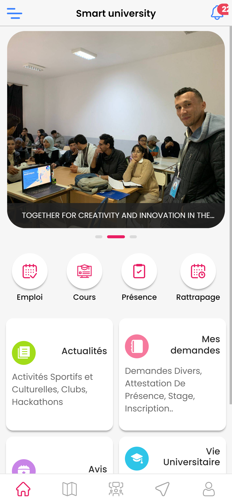
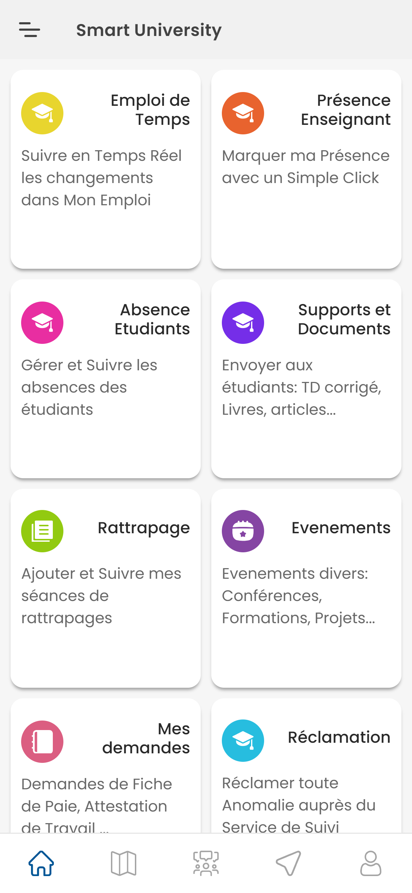
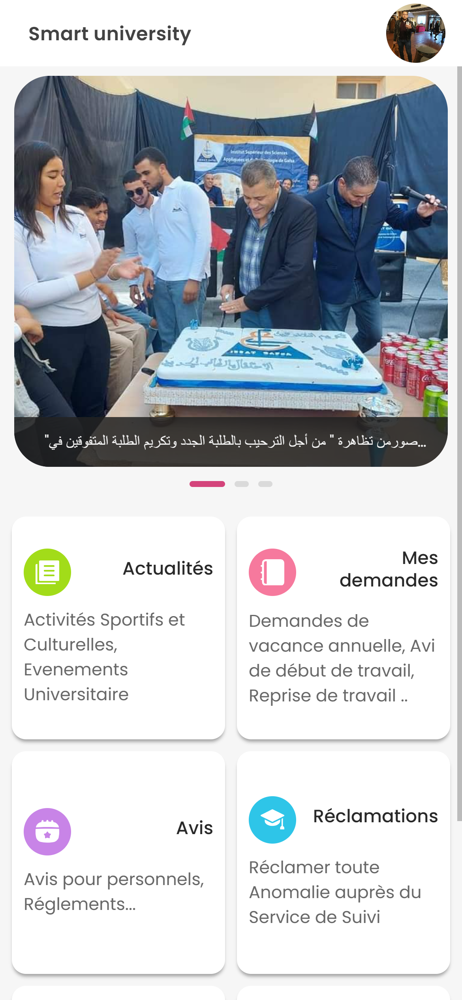

Application mobile pour Etudiant
Smart IPEIG est une application mobile complète dédiée aux étudiants
universitaires. Elle offre un accès facile à toutes les informations et fonctionnalités essentielles, y
compris le profil étudiant, les demandes administratives, les avis sur les cours, les événements, les
notes, les cours, la présence, les emplois du temps, le calendrier des examens, une carte interactive,
un forum, des notifications en temps réel et une messagerie intégrée. Simplifiez votre vie universitaire
avec Smart Institute.

Application mobile pour Enseignant
Smart IPEIG est une application mobile conçue exclusivement pour les enseignants
universitaires. Cette application offre un accès centralisé à toutes les fonctionnalités essentielles
pour simplifier la gestion quotidienne des cours et améliorer l'efficacité pédagogique. Les enseignants
peuvent facilement consulter et mettre à jour leur profil, gérer les demandes administratives liées à
l'enseignement, accéder aux avis des étudiants, rester informés sur les événements académiques,
enregistrer les notes, organiser leurs cours, suivre la présence des étudiants, gérer leurs emplois du
temps, accéder au calendrier des examens, utiliser une carte interactive pour localiser les
installations, participer à des discussions sur le forum, et communiquer rapidement avec les collègues
via la messagerie intégrée. Smart Institute vise à simplifier la vie professionnelle des enseignants en
favorisant une gestion efficace et une communication transparente dans le cadre académique.

Application mobile pour Personnel
Smart Institute est une application mobile dédiée aux personnels universitaires,
offrant une suite complète d'outils pour simplifier la gestion des responsabilités académiques et
administratives. Cette application permet au personnel académique d'accéder facilement à son profil
professionnel, de rester informé sur les événements institutionnels, de superviser les notes et les
évaluations, l'application Smart Institute vise à optimiser la productivité du personnel académique en
centralisant toutes les fonctionnalités nécessaires à leur quotidien professionnel au sein de cette
application.
